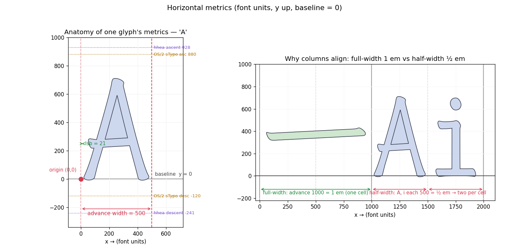

Module 04
Metrics & the em
Outlines (Module 3) say what a glyph looks like. Metrics say where it sits: how big the design grid is, how far the pen moves to the next glyph, and where the baseline and line edges fall. We build up the same way — the em, then per-glyph advance, then how it's stored, then what the numbers mean, then the raw bytes.
Exercises are interleaved. Concept ones have a solution; programming ones have a collapsible ✓ Check your answer.
concept · 1The em square & unitsPerEm
A glyph's points aren't in pixels — they're in font units on a square grid, the
em square, whose side is head.unitsPerEm. Here it's 1000
(the other common value is 2048; TrueType fonts often pick a power of two). The grid is
not tied to any display size:
c lands at c / unitsPerEm × N pixels. The designer works in a fixed
1000-unit world; the renderer scales it to whatever size is asked for — the same "design in abstract
units, scale at draw time" idea as SVG viewBox, DPI-independent UI, and vector graphics.
Units to pixels. At 16 px with unitsPerEm = 1000, how
many pixels is an advance of 1000 versus 500? And what coordinate (in px) is the font-unit point
y = 750?
Show solution
px = value / unitsPerEm × N. Advance 1000 → 1000/1000×16 = 16 px; advance 500 → 8 px. The pointy = 750 → 750/1000×16 = 12 px above
the baseline.
Advance width & side bearings
Each glyph has an origin sitting on the baseline (y = 0;
ascenders go +y, descenders −y). Two horizontal numbers position it:
- advance width — how far the pen moves right from this glyph's origin to the next glyph's origin. This — not the ink — fixes column position.
- left side bearing (lsb) — the gap from the origin to the glyph's leftmost ink.
The right side bearing is implied (
advance − lsb − inkWidth) and not stored.
Name the parts. A glyph has advance 500 and lsb 21, and its ink spans x = 21…470. What is the right side bearing? If you set the advance to 480 without moving the ink, what visually changes for the next glyph?
Show solution
rsb = advance − lsb − inkWidth = 500 − 21 − (470−21) = 500 − 21 − 449 = 30. Shrinking the advance to 480 doesn't move this glyph's ink at all — it pulls the next glyph 20 units left (tighter spacing), because the next origin = this origin + advance.hmtx + hhea: how metrics are stored, and reading them
Per-glyph horizontal metrics live in hmtx. The horizontal header hhea holds
a count, numberOfHMetrics; hmtx stores that many (advance, lsb)
pairs, then for every remaining glyph only an lsb — and those trailing glyphs
all reuse the last advance. So numberOfHMetrics can be <
numGlyphs (a run-length trick we'll see in the bytes in step 5). Reading metrics with the
library:
from fontTools.ttLib import TTFont
font = TTFont(path)
name = font.getBestCmap()[0x4E00] # '一' -> "u4E00"
font["hmtx"][name] # (advance, lsb) tuple, e.g. (1000, 59)
font["head"].unitsPerEm # 1000
font["hhea"].numberOfHMetrics # 46821 (< numGlyphs 46830)The real numbers for three glyphs:
| glyph | advance | lsb | in em |
|---|---|---|---|
| 'A' (U+0041) | 500 | 21 | 0.5 — half-width |
| '一' (U+4E00) | 1000 | 59 | 1.0 — full-width |
| 'i' (U+0069) | 500 | 73 | 0.5 — half-width |

Does the grid really hold? Survey every advance. The text claims every Han
glyph advances 1 em and Latin 0.5 em — but it only showed you three cherry-picked glyphs. Trust nothing:
histogram the advance width of all numGlyphs from hmtx (not
just the cmap-reachable ones). How many distinct advance widths does the whole font actually
use? List each with its count and its size in em. Does anything show up that the 3-row table above
didn't prepare you for — and what kind of glyph would have that advance?
Stuck? a nudge (no full solution)
font['hmtx'].metrics is a {name: (advance, lsb)} dict over all
glyphs. from collections import Counter; Counter(a for a, _ in
font['hmtx'].metrics.values()) buckets them. Divide each width by
font['head'].unitsPerEm for the em value.
✓ Check your answer
Exactly three distinct advances in all 46,830 glyphs:1000 (1.000 em, ×44789), 500 (0.500 em, ×1973), and — the one the table
hid — 0 (0.000 em, ×68). The 1000/500 split is the whole point: 1 em and its exact
half are commensurate, so columns line up (the claim holds — all 20,992 Han chars in the
cmap are exactly 1 em, no exceptions). The zero-width bucket is the surprise: those
are combining marks (e.g. dieresiscomb from Module 3) — they carry no
advance because they stack onto the previous glyph instead of moving the pen.
Going further (optional)
For a simple (non-composite) glyph, the storedlsb should equal the outline's
xMin from glyf. Check it on a handful — it connects two tables: the spacing
in hmtx and the ink in glyf are describing the same left edge.
Self-check above — or paste your histogram to your tutor.
The shrinking table. Why can numberOfHMetrics (46821) be smaller than
numGlyphs (46830)? What do the trailing 9 glyphs use for their advance?
Show solution
hmtx stores 46821 full (advance, lsb) pairs, then only lsb values for the
remaining 46830 − 46821 = 9 glyphs. Those 9 have no advance of their own; each reuses
the last advance in the pairs array (glyph 46820's). The writer orders the glyphs so
a run sharing one advance lands at the end, letting the table drop 9 redundant advances — run-length
elision.
What the numbers mean
Full-width = 1 em ⇒ columns align
'一' advances exactly 1 em, and so does every Han ideograph in
this font. That's precisely why a terminal grid stays aligned under Chinese text: each Han glyph fills
one cell. The Latin advances 0.5 em, an exact divisor, so two Latin glyphs fill one CJK
cell and the grid holds. (An arbitrary advance like 537 would break it — alignment needs the advances to
be commensurate.)
'一' at exactly 1000/1000 = 1.000 em. So the merge can reuse the metrics
as-is, with no re-metricizing — checking that advance/unitsPerEm equality across the
two faces is exactly the sanity check you'd run before assembling such a hybrid. (We'll actually build
this family in Module 5.)
Line height: three competing ascent/descent sets
Here's the famous trap. A font carries three vertical-line-metric sets, and apps disagree on which to honour:
| source | ascent | descent | lineGap | used by |
|---|---|---|---|---|
| hhea.ascent/descent/lineGap | 928 | −241 | 0 | Mac/CoreText lean here |
| OS/2 sTypoAscender/Descender/LineGap | 880 | −120 | 0 | when USE_TYPO_METRICS is set |
| OS/2 usWinAscent/usWinDescent | 928 | 241 | — | Windows clipping/line box |
They disagree: summing hhea gives 928+241 = 1169 units of line
height; summing sTypo gives 880+120 = 1000. Same file, different line heights across
apps — the single most common cross-platform line-height surprise. The OS/2 fsSelection
USE_TYPO_METRICS bit (0x80) is meant to say "prefer the sTypo set" — and in this font
that bit is off (fsSelection = 0b1000000), so apps fall back to hhea/win
and you get the taller 1169.
Vertical writing
For top-to-bottom CJK, vhea/vmtx are the analogues (both present here — you
saw them in Module 1's directory). Instead of an advance width they carry an advance
height: how far the pen drops to the next glyph in a vertical column. This connects to
the vert feature in Module 6, which swaps in vertical glyph forms.
One file, two line heights. Name the three ascent/descent sources with this font's values, and explain concretely how two apps draw this font at different line heights. What does the USE_TYPO_METRICS bit do, and is it set here?
Show solution
(1)hhea 928/−241/0; (2) OS/2 sTypo 880/−120/0; (3) OS/2 usWin
928/241. An app using hhea draws 928+241 = 1169-unit lines; one using sTypo draws 880+120 = 1000 —
noticeably tighter. USE_TYPO_METRICS (fsSelection bit 0x80) tells apps to prefer the
sTypo set; here it's off, so apps use hhea/win and you get the taller 1169. With no
universal rule for which set wins, the same file renders at different heights across platforms.
Hand-parsing hmtx
hmtx (at file offset 504, from Module 1) is the simplest table yet — two regions:
hmtx: [ (adv,lsb)₀ ][ (adv,lsb)₁ ] … [ (adv,lsb)₄₆₈₂₀ ][ lsb₄₆₈₂₁ ] … [ lsb₄₆₈₂₉ ]
└─── 46821 longHorMetric pairs (uint16 adv + int16 lsb = 4 B) ──┘└── 9 lsb-only (int16, 2 B) ──┘
advance(g) = pairs[g].adv if g < 46821 else pairs[46820].adv
lsb(g) = pairs[g].lsb if g < 46821 else trailingLsb[g − 46821]
That layout checks against Module 1's length: 46821×4 + 9×2 = 187284 + 18 = 187302 bytes. The first 16 bytes (four longHorMetric pairs):
03 e8 00 0f 01 f4 00 15 01 f4 00 15 01 f4 00 15
| bytes | gid | advance | lsb | glyph |
|---|---|---|---|---|
| 03 e8 00 0f | 0 | 0x03e8 = 1000 | 0x000f = 15 | .notdef (full-width box) |
| 01 f4 00 15 | 1 | 0x01f4 = 500 | 0x0015 = 21 | A |
| 01 f4 00 15 | 2 | 500 | 21 | Aacute |
| 01 f4 00 15 | 3 | 500 | 21 | Abreve |
To read a specific glyph, multiply: '一' is gid 3171, well under 46821, so its pair is
at 504 + 3171×4 = 13188 → (1000, 59). A glyph with gid ≥ 46821 would instead
reuse pairs[46820].adv and pick its lsb from the trailing region.
hmtx blindly past numberOfHMetrics: beyond it there are no more
advances, only lsb values. Out-of-range glyphs take the last advance — exactly the run-length
rule from step 3.
Hand-parse hmtx. Without font['hmtx'], read the raw hmtx
bytes and write advance(gid) / lsb(gid) yourself, correctly handling both the
longHorMetric region and the trailing-lsb region. Verify a few glyphs (e.g. gid 0, 1, and 3171)
against font['hmtx'].
Stuck? a nudge (no full solution)
GetnumberOfHMetrics from hhea and the table offset from
font.reader.tables['hmtx'].offset (or seek with Module-1 parsing). A pair is
">Hh" (uint16 advance, int16 lsb). For gid < numberOfHMetrics read
pair gid; else advance = pair numberOfHMetrics−1, and the lsb is in the
int16 array that starts right after the pairs.
✓ Check your answer
gid 0 →(1000, 15) (.notdef); gid 1 → (500, 21) ('A'); gid 3171 →
(1000, 59) ('一'). All match font['hmtx'].
Self-check above — or paste your parser + results to your tutor.
Exploring metrics yourself
| handle | gives |
|---|---|
| font['hmtx'][name] | (advance, lsb) for one glyph |
| font['hmtx'].metrics | the whole {name: (advance, lsb)} dict |
| font['hhea'].ascent / .descent / .lineGap / .numberOfHMetrics | horizontal header |
| font['OS/2'].sTypoAscender / …Descender / usWinAscent / usWinDescent / fsSelection | the other two line-metric sets + the USE_TYPO_METRICS bit |
| font['head'].unitsPerEm | the em size |
| font['vhea'] / font['vmtx'] | vertical-writing metrics (advance height) |
For the ink box (as opposed to the advance box), replay a glyph through a
BoundsPen: from fontTools.pens.boundsPen import BoundsPen →
pen.bounds gives the tight (xMin,yMin,xMax,yMax) of the actual outline. Command line:
ttx -t hmtx -t hhea -t OS/2 font.ttf dumps all of it as XML.
Could these two fonts merge without re-metricizing? Say we want to combine the
tutorial's two fonts into one family — WenKai as Regular, ZhenKai as Bold. Load both source
fonts and, for each, compute '一''s advance ÷ unitsPerEm. Print both ratios
and confirm they're equal (and 1.0) — the precondition that lets ZhenKai stand in as the bold without
re-metricizing. Bonus: dir() the hhea and OS/2 tables and find
two fields you hadn't used.
Stuck? a nudge (no full solution)
A helper taking a path keeps it tidy: open,name = getBestCmap()[0x4E00], ratio =
f['hmtx'][name][0] / f['head'].unitsPerEm. If you only have one font, compute its ratio
and state what equality across both would prove.
✓ Check your answer
Both ratios are 1.0 (each font advances '一' at exactly one em), so a regular→bold swap keeps every full-width column the same width — no advance needs recomputing. That equality is the whole justification for merging the two faces without re-metricizing.Self-check above — or paste both ratios to your tutor.